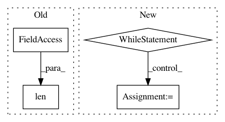

c25fa38deb4efc5445f64af3ec17eae0eb660d2f,keras/models.py,Sequential,add,#Sequential#Any#,409
Before Change
"not already be connected somewhere else. "
"Model received layer " + layer.name +
" which has " +
str(len(layer.inbound_nodes)) +
" pre-existing inbound connections.")
if len(layer.inbound_nodes[0].output_tensors) != 1:
After Change
// In case of nested models: recover the first layer
// of the deepest model to infer input shape and dtype.
first_layer = layer.layers[0]
while isinstance(first_layer, (Model, Sequential)):
first_layer = first_layer.layers[0]
batch_shape = first_layer.batch_input_shape
dtype = first_layer.dtype
else:
// We were passed a regular layer, and it should
In pattern: SUPERPATTERN
Frequency: 3
Non-data size: 4
Instances
Project Name: keras-team/keras
Commit Name: c25fa38deb4efc5445f64af3ec17eae0eb660d2f
Time: 2017-11-09
Author: francois.chollet@gmail.com
File Name: keras/models.py
Class Name: Sequential
Method Name: add
Project Name: NifTK/NiftyNet
Commit Name: b94e16b5c91d472fcca9fa4d54278d22ac7903e2
Time: 2017-08-20
Author: wenqi.li@ucl.ac.uk
File Name: niftynet/io/misc_io.py
Class Name:
Method Name: save_data_array
Project Name: autonomio/talos
Commit Name: 1e0dc41ed1a7346076f32741323049b631f93e6e
Time: 2019-03-07
Author: mailme@mikkokotila.com
File Name: talos/scan/scan_run.py
Class Name:
Method Name: scan_run